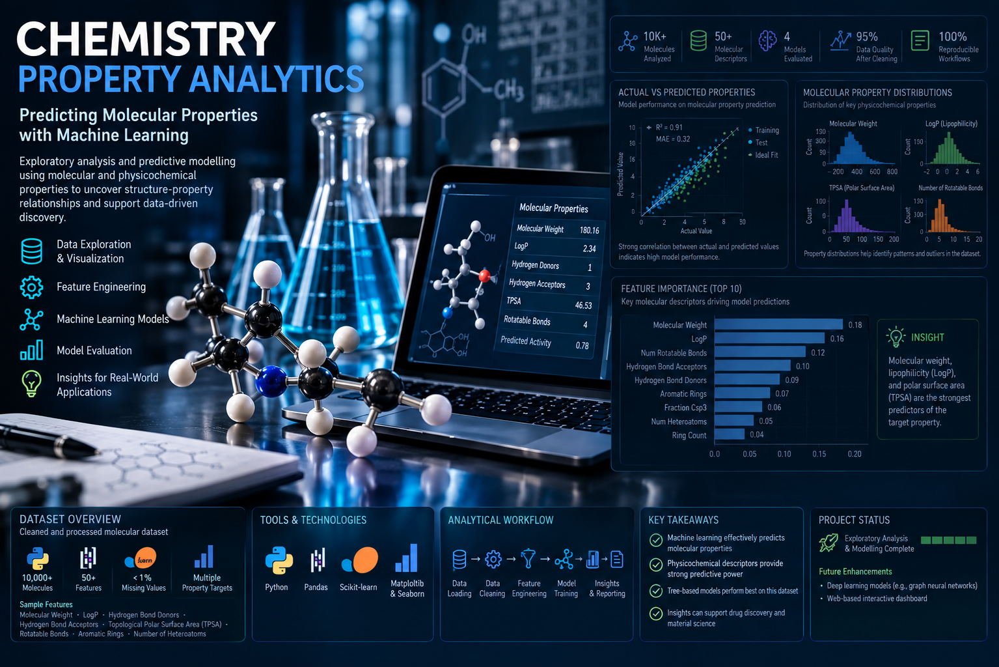

Agu Charles
Chibuike
I build reliable analytical systems that turn raw operational and scientific data into structured models, rigorous analysis, and decision-ready outputs.
Engineering the layer between data and decisions

Projects that demonstrate how I work
These projects are deliberately different. Together they demonstrate analytical engineering, scientific modelling, longitudinal analysis, business intelligence, and the ability to work from raw data through to an interpretable result.

Parking Enforcement Analytics
How can operational enforcement data be transformed into a reliable analytical system for monitoring performance, workload, and operational coverage?

Nairobi Runners Analytics
How do training behaviour, sleep, and recovery interact longitudinally across recreational runners?

Chemical Property Analytics
Can molecular structure and physicochemical properties be used to predict aqueous solubility, and what can the model reveal about chemical behaviour?


The projects build on real-world experience
My portfolio projects are not intended to substitute for professional experience. They extend it by demonstrating how I apply analytical methods independently and document the reasoning behind them.
Scientific foundation, data-science training
The tools behind the work
SQL
Snowflake
DuckDB
dbt
ETL / ELT
Data modelling
R
Pandas
Statistical modelling
Longitudinal analysis
Machine learning
Feature engineering
DAX
Tableau
Quarto
Shiny
Data visualisation
Analytical reporting